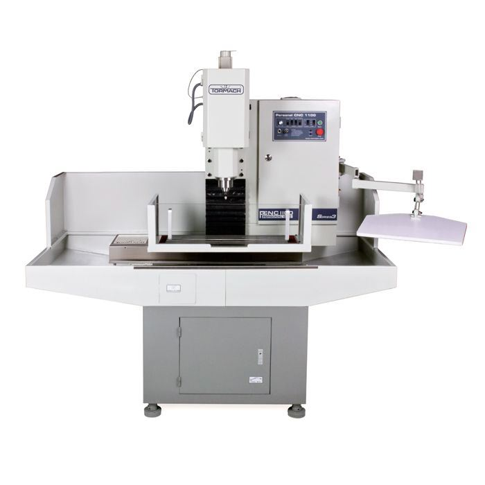

Getting Started¶
Before using the machine fully read and understand the material covered in this guide. This guide is not a replacement to the full documenation provided by Tormach. If you have any questions please ask one of the shop staff.
Overview¶
The Tormach PCNC 1100 is intended for small work. The machine’s X, Y, Z limits are 18” x 9.5” x 16.25” (457mm x 241mm x 419mm) and the table size is 34” x 9.5” (864mm x 241mm). The machine has a spindle speed range of 100 to 5140 RPM with a maximum feed rate of 110 IPM (2794 mm/m) in the X & Y axis and 90 IPM (2286 mm/m) in the Z axis. If you need a machine that is capable of handling larger work consider the HAAS VM (capable of doing 5-axis work) or Trak DPM.
Front Control Panel¶
The front control panel is where a number of important machine controls are located. This includes the start button, emergency stop, computer on/off, coolant on/off and a number of spindle controls. You should familarize yourself with these controls and their location.
Mach3 CNC Controller Software¶
The Mach3 CNC controller software is the main interface used to interact with the machine. Tormach’s full documentation can be found here: Mach3 CNC Controller Software Manual.
Jog Controller¶
The jog controller is the main method used to move the machine. First click the button for the axis you want then use the dials in the center of the controller to control the movement. There are two dials, an inner one and an outer one. The outer dial is for fast movements and the inner dial is for slow movements (roughly one motor step at a time). The default maximum travel speed is set in the Mach3 CNC control software.
Automatic Tool Changer (ATC)¶
The ATC is used to store and load tools automatically. To insert and remove tools into the spindle use the black control box shown in the picture.
Reference Tool¶
The reference tool is used to calibrate the toolsetter when setting tool lengths.
Tool Setter Probe¶
The tool setter probe is used to measure and record the lengths of tools to be used. It is essential when running a cnc program that the machine has tool lengths set so that it knows where the tools are in relation to the work.
Touch Probe¶
The touch probe is used to locate the work on the machine in the x, y, and z axes. It’s mechanical equivalent is the edgefinder. The touch probe can also be used to digitize the shape of an object, useful for reverse engineering.
Tool Holders¶
Tormach uses a special tool holding system, called TTS, in place of R8 collets (although the machine can accept R8 collets if the ATC is not attached). Tormach’s full documentation can be found here: TTS Manual and Preventing Collet Slip.
A Axis¶
The machine can have a 4th axis added to it. This is referred to as the A axis. Workpieces can be attached directly to the face of the A axis. A chuck or collet adapter can also be attached to the axis to hold work. Tormach’s full documentation can be found here: 4th Axis Manual.
Tailstock¶
The tailstock can be used in conjunction with the A axis to support long material.
5C Collet Adapter¶
The 5C collet adapter can be attached to the face of the A-axis for holding work as well as bolted to the table of the machine or clamped in a vise.
Fogbuster¶
The Fogbuster is a mist coolant system. It can be used as an alternative to the built-in flood coolant system. The Fogbuster is ideal for operations that don’t require full flood coolant but where cutting oil alone may be insufficient. The Fogbuster requires less clean up than the flood coolant.